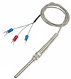
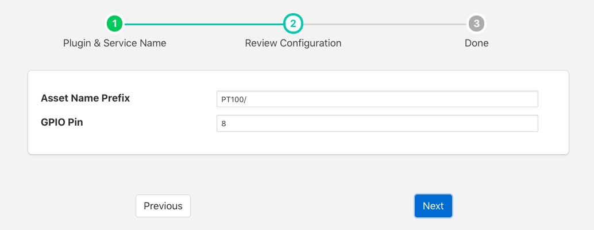
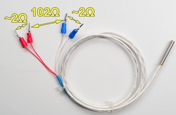
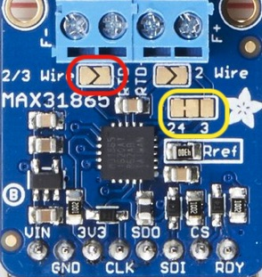

PT100 Temperature Sensor¶
The foglamp-south-pt100 is a south plugin for the PT-100 temperature sensor. The PT100 is a resistance temperature detectors (RTDs) consist of a fine wire (typically platinum) wrapped around a ceramic core, exhibiting a linear increase in resistance as temperature rises. The sensor connects via a MAX31865 converter to a GPIO pins for I2C bus and a chip select pin.
Note
This plugin is only available for the Raspberry Pi as it requires to be interfaced to the I2C bus on the Raspberry Pi GPIO header socket.
To create a south service with the PT100
- Click on South in the left hand menu bar
- Select pt100 from the plugin list
- Name your service and click Next

- Configure the plugin
- Asset Name Prefix: A prefix to add to the asset name
- GPIO Pin: The GPIO pin on the Raspberry PI to which the MAX31865 chip select is connected.
- Click Next
- Enable the service and click on Done
Wiring The Sensor¶
The MAX31865 uses the I2C bus on the Raspberry PI, which requires three wires to connect the bus, it also requires a chip select pin to be wired to a general GPIO pin and power.
| MAX 31865 Pin | Raspberry Pi Pin |
|---|---|
| Vin | 3V3 |
| GND | GND |
| SDI | MOSI |
| SDO | MISO |
| CLK | SCLK |
| CS | GPIO (default GPIO8) |
There are two options for connecting a PT100 to the MAX31865, a three wire PT100 or a four wire PT100.
To connect a four wire PT100 to the MAX 31865 the wires are connected in pairs, the two red wires are connected to the RTD- connector pair on the MAX31865 and the two remaining wires are connected to the RTD+ connector pair. If your PT100 does not have red wires or you wish to verify the colours are correct use a multimeter to measures the resistance across the pair of wires. Each pair should show 2 ohms between them and the difference between the two pairs should be 102 ohms, but will vary with temperature.
To connect a three wire sensor connect the red pair of wires across the RTD+ pair of connectors and the third wire on the RTD- block. If your PT100 doe not have a pair of red wires, or you wish to verify the colours and have access to a multimeter, the resistance between the red wires should be 2 ohms. ~The resistance to the third wire, from the red pair, will be approximately 102 ohms but will vary with temperature.
If using the 3 wire sensor you must also modify the jumpers on the MAX31865.
Create a solder bridge across the 2/3 Wire jumper, outlined in red in the picture above.
You must also cut the thin wire trace on the jumper block outlined in yellow that runs between the 2 and 4.
Then create a new connection between the 4 and 3 side of this jumper block. This is probably best done with a solder bridge.